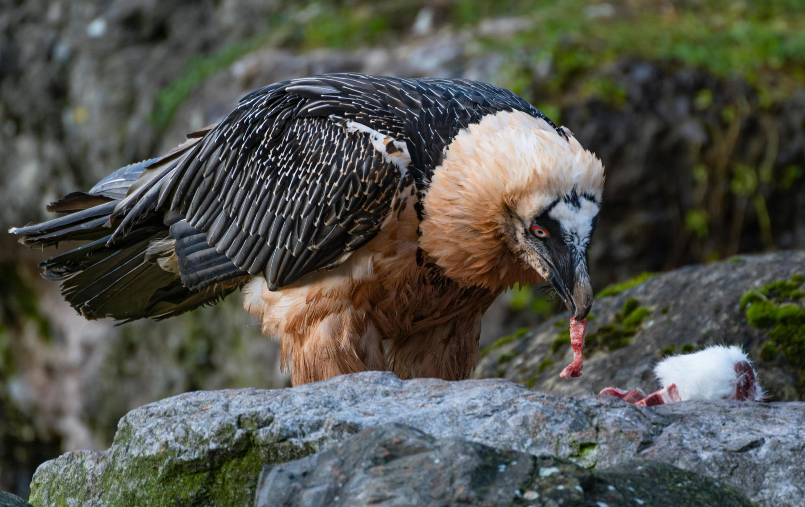

Welcome to the bearded vultures fanpage, where we are all about bearded vultures or vultures in general! Here, you can find all things related to bearded vultures, including latest articles, conservation status, facts about bearded vultures, and much more. We're excited to have you here.
Organized completely from some laptop for a web design class in a 17 year old's bedroom, our story began with a vision:
"Bearded vultures look really cool, and they have a lot of aura. Why aren't people talking about this cool bird? In fact, what happened to our enthusiasm for animals and our attention to their wellbeing in general?"
So, thus, this fanpage was born. And now you can read all about this cool not-so-little-bone-eating critter. Feel free to read about who we are, or perhaps more facts about bearded vultures.
A bird of prey that feeds on carcasses and vertebrates. They live in mountainous regions like in Iran, southern Europe, or East Africa, and their diet consists of 70-90% bones! With a pH level matching that of battery acid (approximately 0.8), bearded vultures are able to digest bones that most bacteria, fungi, or other animals can't consume. Not only does this clean up nature's residues of animal corpses, but it's highly nutritious for bearded vultures to consume because of the precious bone marrow that other organisms can't reach.
